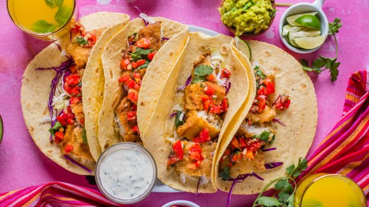
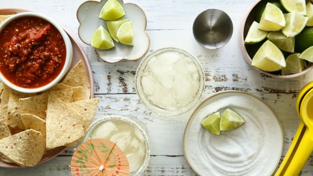
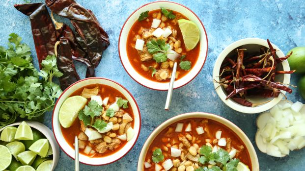

Baja Fish Tacos
Just like a big fish, this recipe is 'a keeper.' I love it because it's easy to make ahead of time, so I spend less time when we come back from fishing. Just heat the oil, batter the fish and done! The 'secret sauce' is so refreshing and pairs perfectly.
Margarita
This is the way to make a great margarita. Another assurance is to make it with good tequila. There are many different kinds (some of them are really expensive, which are better for drinking straight) but for a margarita, I usually use Cuervo.
Menudo Rojo
This Mexican "caldo" (soup) from Chihuahua in northern Mexico is made with tripe, and is filled out with hominy, chilis, onion and lime. According to popular legend, menudo can be consumed as a cure for hangovers.